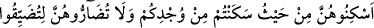
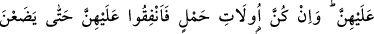
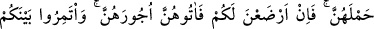
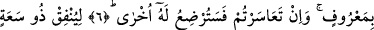
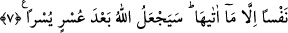

ARANIZDA
UYGUN BİR ŞEKİLDE
ANLAŞIN
6. Onları gücünüz ölçüsünde oturduğunuz yerin bir bölümünde oturtun, onları
sıkıştırıp (gitmelerini sağlamak için) kendilerine zarar vermeye kalkışmayın. Eğer
hâmile iseler, doğum yapıncaya kadar nafakalarını verin. Sizin için çocuğu
emzirirlerse onlara ücretlerini verin, aranızda uygun bir şekilde anlaşın. Eğer
anlaşamazsanız çocuğu, başka bir kadın emzirecektir.
7. İmkânı geniş olan, nafakayı imkânlarına göre versin; rızkı daralmış bulunan da
Allah’ın kendisine verdiği kadarından nafaka ödesin. Allah hiç kimseyi verdiği
imkândan fazlasıyla yükümlü kılmaz. Allah, bir güçlükten sonra bir kolaylık
yaratacaktır.
“Onları gücünüz ölçüsünde oturduğunuz yerin bir bölümünde oturtun.” Gücünüz ve
zenginliğiniz nisbetinde onlara mesken yapınız. Bu âyet-i kerîme isti’nâf-i beyâniyye
olup takvâya teşvik eden daha önceki âyetten anlaşılan bir soruya cevap teşkil
etmektedir. Sanki şöyle sorulmuştur: İddet bekleyen kadınlar hakkında takvâyla nasıl
amel edeceğiz? Bu soruya sanki şöyle cevap verilmiştir: Onları oturduğunuz yerin bir
bölümünde oturtun; yâni evinizin belli bir köşesinde oturtun. Buradaki hitap karılarını
boşayan mümin erkekleredir. Âyet metninde yer alan “min vucdiküm”/gücünüz ve
imkânınızdan, demektir. “el-Vücd” kudret ve zenginlik demektir. Arapçada “iftekara
fulânün ba’de vucdihî” denir ki, mânâsı filanca kişi zengin iken fakir düştü, demektir.
“Min vucdiküm” ifâdesi “haysu sekentüm” ifâdesinden atf-ı beyandır ve onun tefsiridir.
Aynu’l-maâni’de denir ki: “min” cinsi beyan etmek içindir. Çünkü yukarda yer alan
“haysu” kelimesinde bir kapalılık vardır. Ebû Hayyân, “atf-ı beyanda âmilin tekrar
edildiği bilinmemektedir, amilin tekrar edildiği sadece bedelde bilinmektedir. Şu halde
uygun olanı “min vücdiküm” ifâdesinin bedel olarak anlaşılmasıdır.” demiştir.